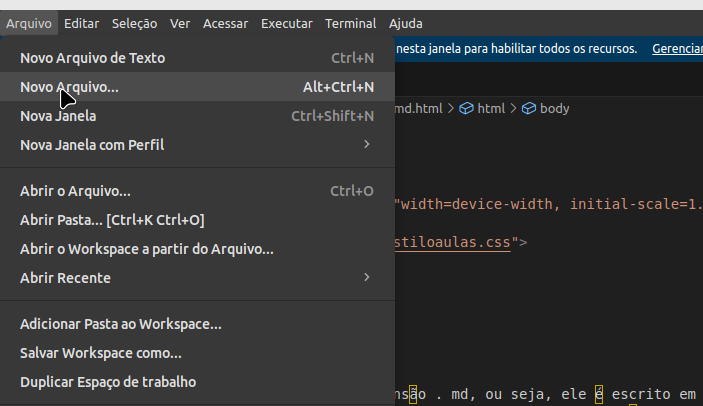
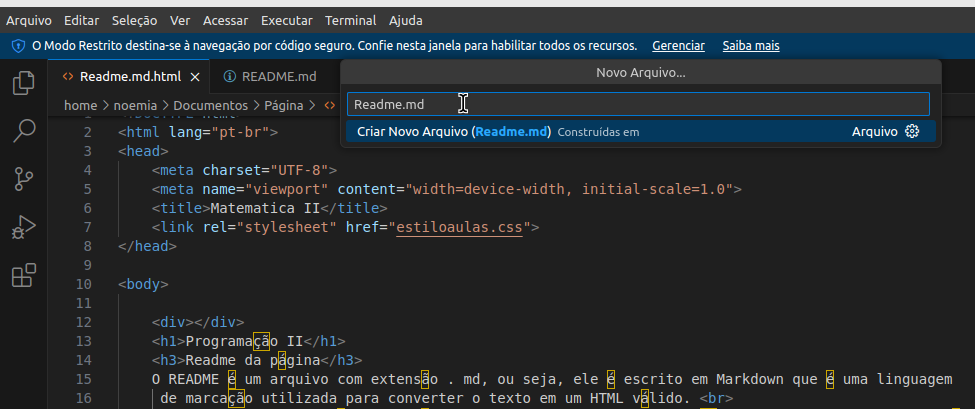
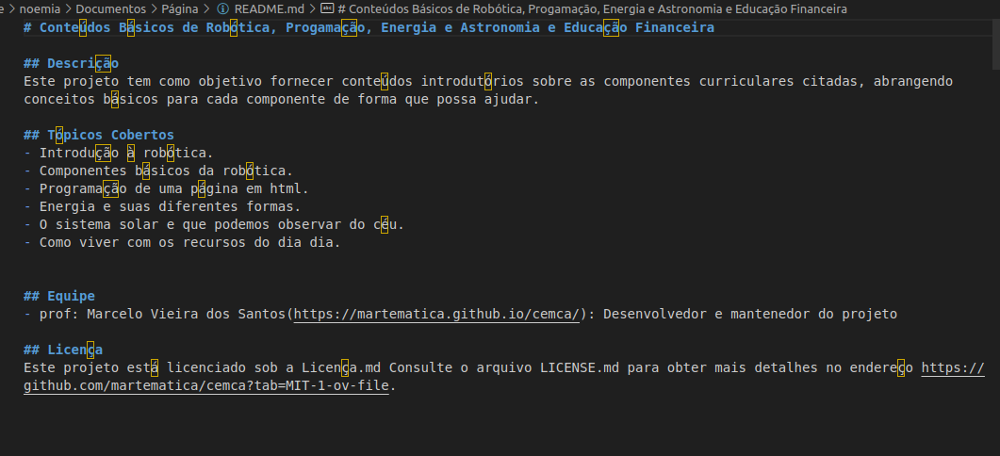

O README é um arquivo com extensão . md, ou seja, ele é escrito em Markdown que é uma linguagem
de marcação utilizada para converter o texto em um HTML válido.
README deve ter, no mínimo, o título do projeto e uma boa descrição, como contribuir e a licença dele.
para construir seu readme precisa-se abrir o visual studio code, ir em arquivo, novo arquivo

salvar com o nome de readme.md

para escreve-lo basta colocar # para titulos, ## para subtítulos e - para topicos do qual fala seu
site

Atividade
Faça o readme.md de sua página html e lembre-se um bom readme que fará seu site ter maior visualização, pois
muitas vezes, é o primeiro item que um visitante verá ao visitar seu repositório.